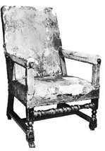

10 février : Première du Malade imaginaire au Palais-Royal.
17 février : 4e représentation du Malade imaginaire, que Molière, malgré son état, refuse d'annuler. Pris d'une convulsion sur scène, il est transporté dans sa chaise, et meurt entre les bras de deux religieuses qui résidaient alors chez lui. Malgré sa demande, deux prêtres refusent de venir et un troisième arrive trop tard. 21 février : Grâce à la démarche de son épouse auprès du roi, inhumation de son corps dans le cimetière Saint-Joseph qui dépend de Saint-Eustache. 24 février : Après avoir suspendu les représentations le 19 et le 21, la troupe reprend Le Misanthrope avec Baron dans le rôle d'Alceste. 13-21 mars : On dresse un inventaire après décès, grâce auquel nous connaissons notamment les costumes que Molière portait sur scène. 9 juillet : La nouvelle Troupe du Roi, composée de ceux des compagnons de Molière qui ne sont pas passés à l'Hôtel de Bourgogne et des comédiens du Marais dont la troupe est supprimée, commence à jouer. Elle conserve le repertoire de Molière.
• VIE THÉÂTRALE ET LITTÉRAIRE
Montfleury, Le Comédien poète.
• POLITIQUE ET SOCIÉTÉ
Guillaume d'Orange réunit une coalition contre la France.
• ARTS, SCIENCES ET RELIGION
M.-A. Charpentier, Les Arts florissants.

Fauteuil dans lequel Molière joua Le Malade imaginaire. Comédie-Française.